Weddings
Over ten years, I photographed more than 200 traditional and white weddings across Africa, Europe, and the United States. A wedding day is somewhat planned, but it is full of unplanned moments, so I stayed ready to capture what happened to tell the story of a couple’s biggest day. My approach was not to over direct the couples. I wanted them to enjoy their wedding, so I documented the day as it unfolded, from preparation through ceremony to celebration. Having worked across traditional and white weddings, I understood the different rituals and emotional rhythms of each, which helped me anticipate key moments and be in position when they happened.
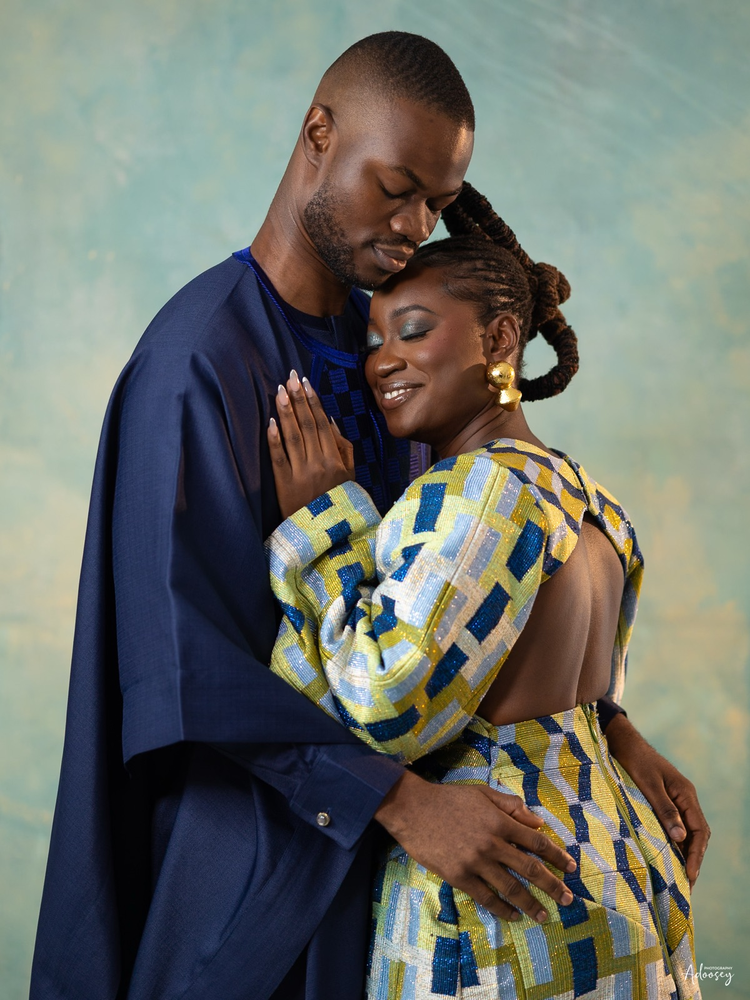
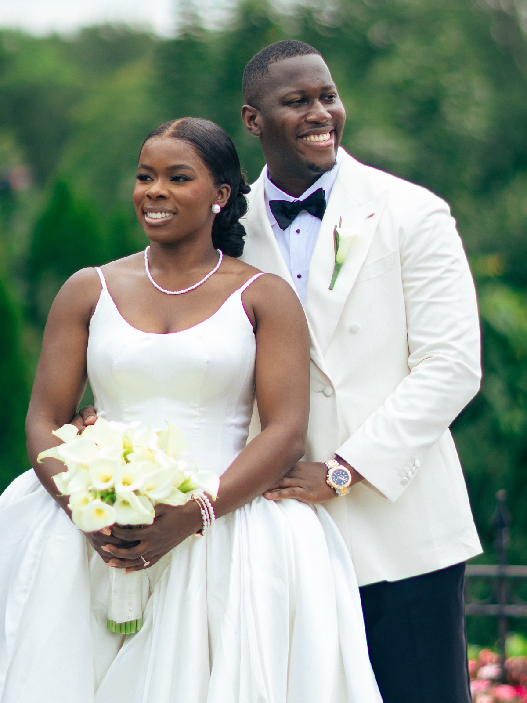
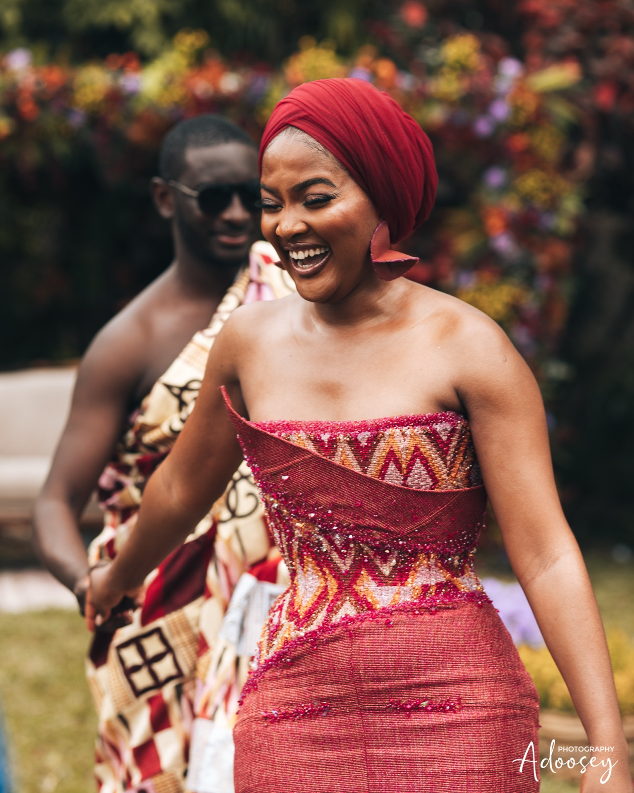
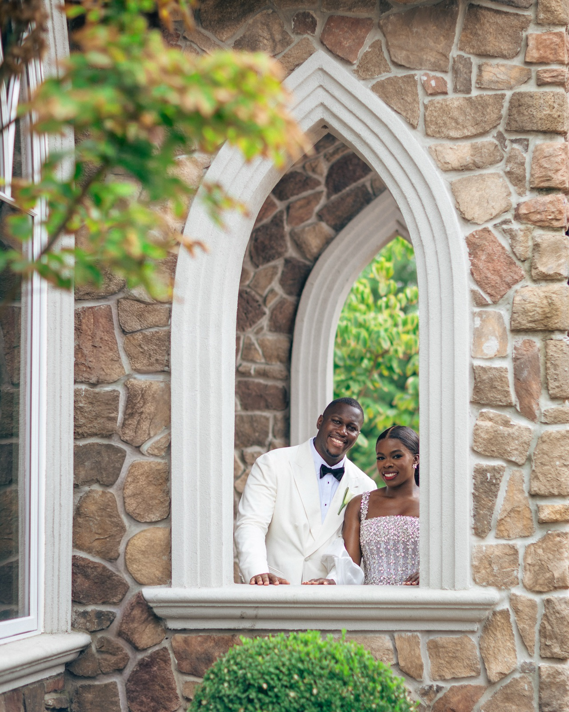
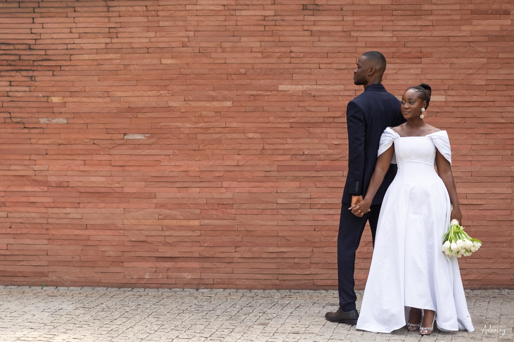
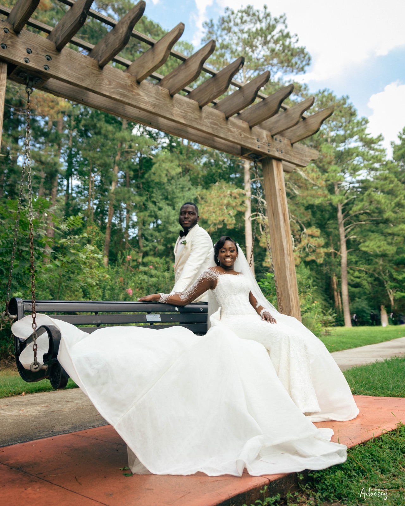
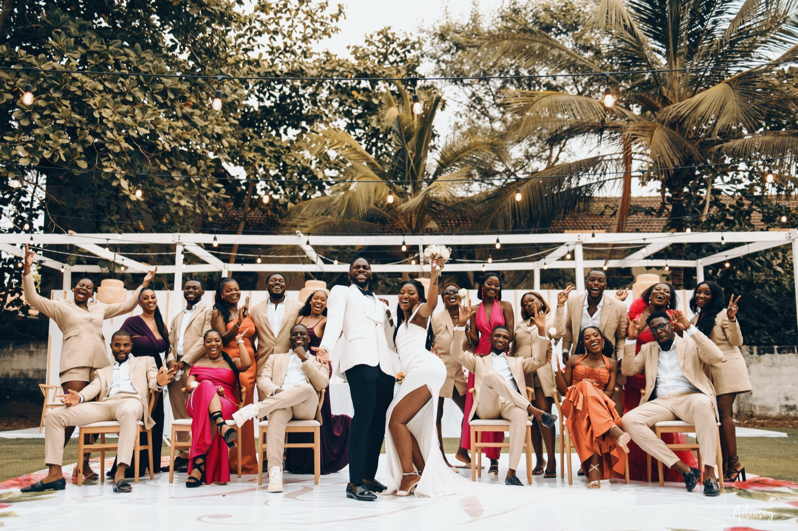
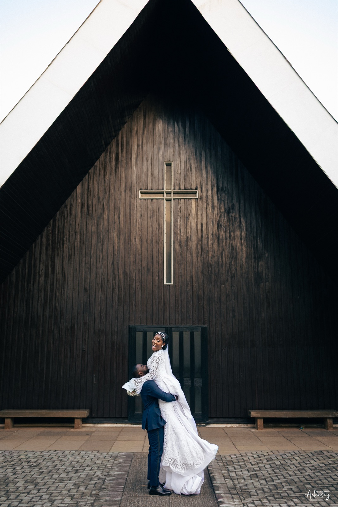
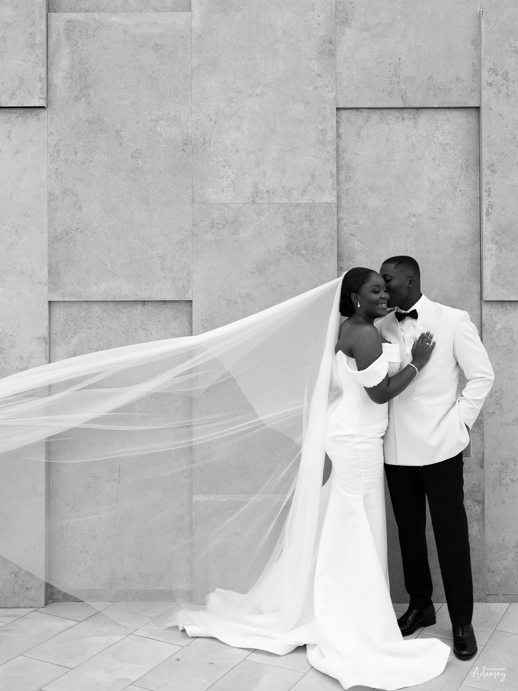
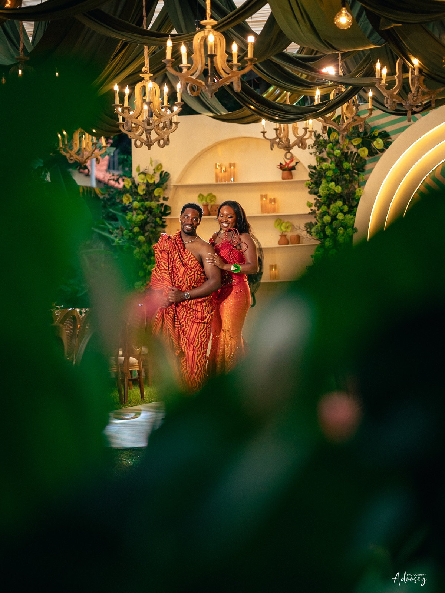
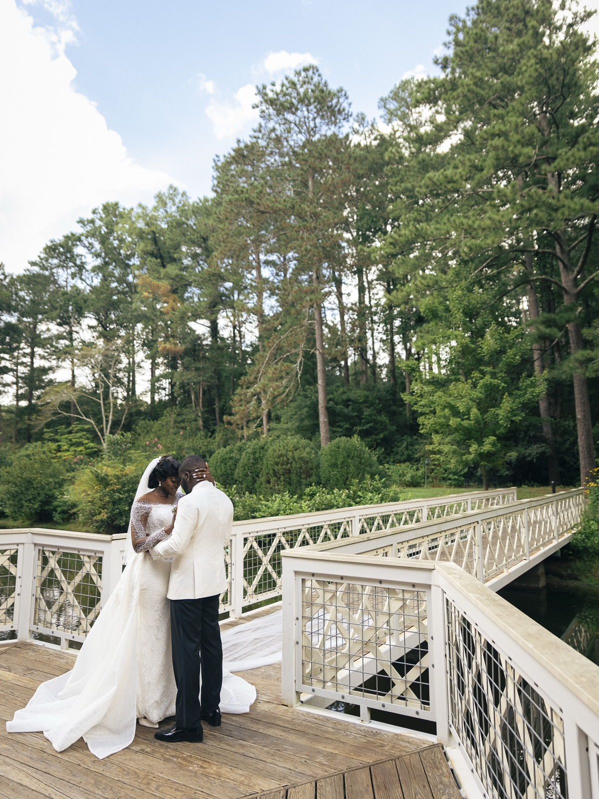
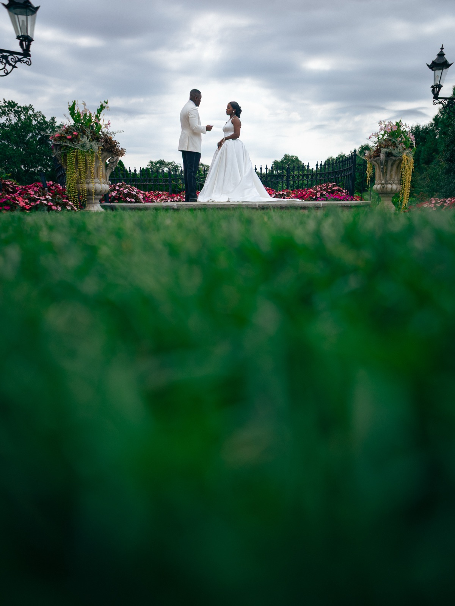
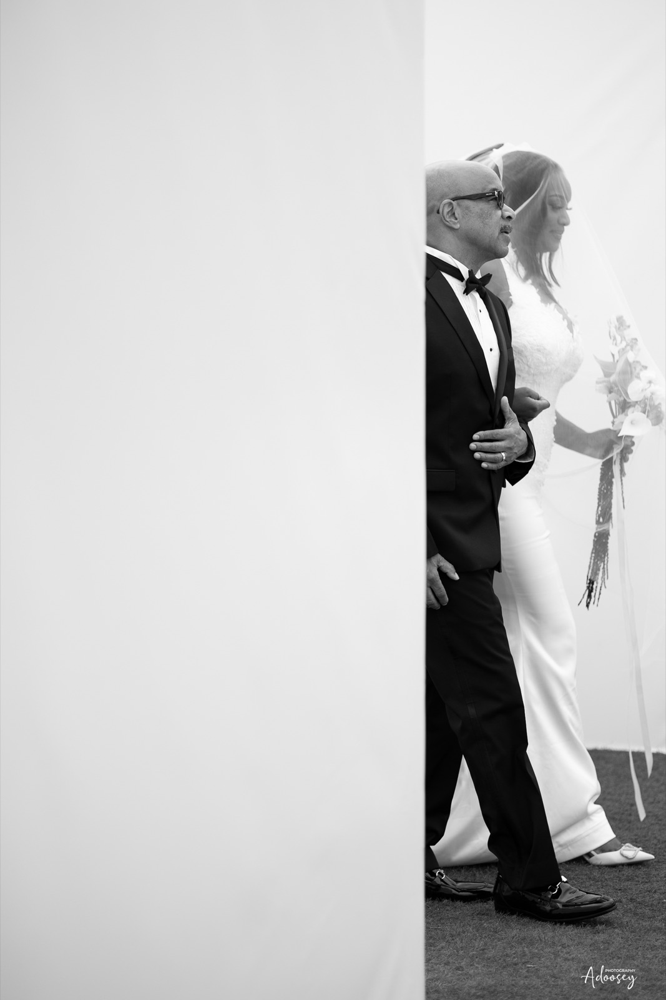
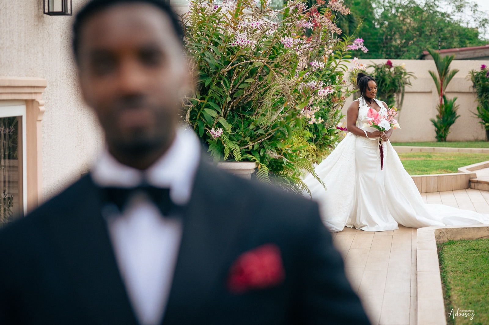